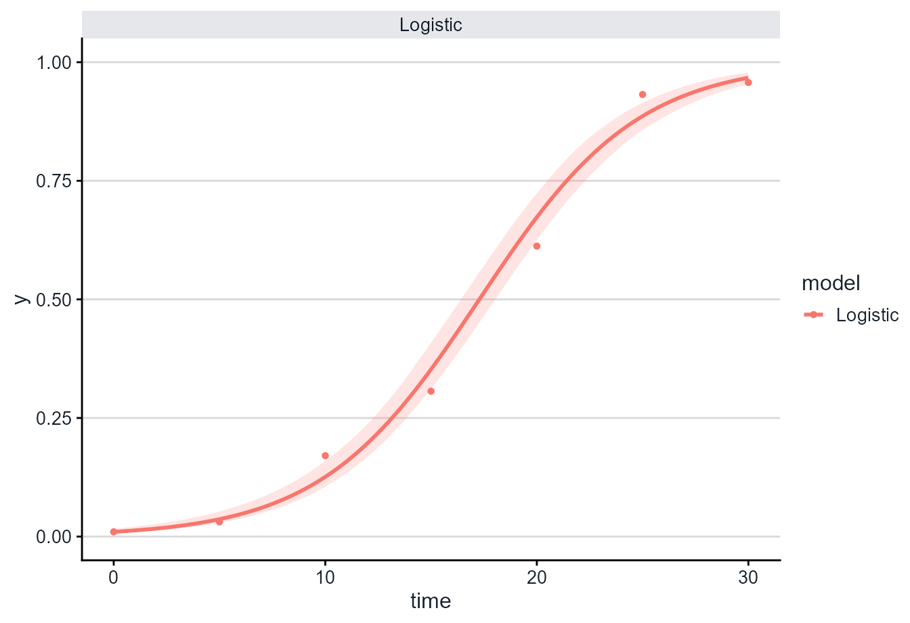
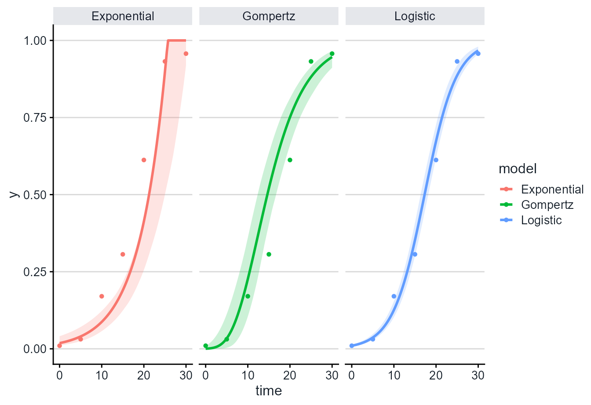
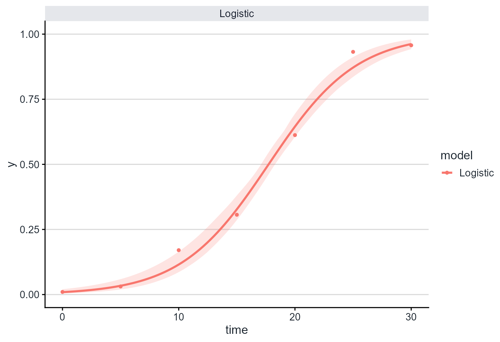

Uncertainty bands for fitted disease progress curves
Source:vignettes/confidence-intervals.Rmd
confidence-intervals.RmdWhy add intervals?
Fitted disease progress curves are usually shown as a single line, but the line is only an estimate. Confidence bands help communicate the uncertainty around the fitted epidemic curve.
This article focuses on uncertainty in the fitted mean curve. The
bands shown by plot_fit() are not prediction intervals for
future observations, and they do not replace a full model-based analysis
of treatment effects. They are a visual tool for asking how stable the
fitted curve is under residual resampling.
In epifitter, confidence bands are added directly in
plot_fit():
plot_fit(fit, conf_int = TRUE, ci_method = "bootstrap", nsim = 500)The argument conf_int controls whether the interval is
drawn. The argument ci_method controls how the interval is
estimated.
Use these intervals to compare fitted shapes cautiously. If the scientific question is a formal comparison among treatments, use a statistical model that matches the experimental design after defining the target quantity.
Example data
We first simulate one logistic epidemic with moderate observational noise and fit the four linearized epidemic models. The noise is intentionally visible in this example so the confidence bands are easy to inspect.
set.seed(123)
epi <- sim_logistic(
N = 30,
y0 = 0.01,
dt = 5,
r = 0.25,
alpha = 0.40,
n = 1
)
fit <- fit_lin(time = epi$time, y = epi$random_y)
head(fit$data)
#> time y model linearized predicted residual
#> 1 0 0.01000000 Exponential -4.60517019 0.0184182273 -8.418227e-03
#> 2 0 0.01000000 Monomolecular 0.01005034 -0.8327456690 8.427457e-01
#> 3 0 0.01000000 Logistic -4.59511985 0.0099495389 5.046107e-05
#> 4 0 0.01000000 Gompertz -1.52717963 0.0004464615 9.553538e-03
#> 5 5 0.03102984 Exponential -3.47280593 0.0400754198 -9.045579e-03
#> 6 5 0.03102984 Monomolecular 0.03152146 -0.0538461759 8.487602e-02Residual bootstrap confidence bands
The default bootstrap method resamples residuals from the fitted curve, creates new plausible disease progress curves at the observed assessment times, refits the model many times, and builds the band from the distribution of fitted curves.
This approach assumes that the residual pattern is a reasonable basis for generating plausible alternative curves. It is useful for visualization, but it should still be checked against the biology of the system and the assessment design.
plot_fit(
fit,
models = "Logistic",
conf_int = TRUE,
ci_method = "bootstrap",
nsim = 100,
seed = 123
)
For final analyses, increase nsim, for example:
plot_fit(fit, conf_int = TRUE, ci_method = "bootstrap", nsim = 500)Larger values of nsim make the interval more stable, but
also make the plot slower to compute.
Wild bootstrap confidence bands
The wild bootstrap method randomly changes the sign of resampled
residuals before refitting the model. This keeps the original assessment
times intact and is available with ci_method = "wild".
Wild bootstrap intervals are often useful as a sensitivity check when residual variation changes across the range of fitted values.
plot_fit(
fit,
models = "Logistic",
conf_int = TRUE,
ci_method = "wild",
nsim = 100,
seed = 123
)Compare multiple models
Confidence bands can also be drawn for more than one model at a time.
plot_fit(
fit,
models = c("Exponential", "Logistic", "Gompertz"),
conf_int = TRUE,
ci_method = "bootstrap",
nsim = 100,
seed = 123
)
Nonlinear fits
The same interface works with nonlinear fits returned by
fit_nlin() and fit_nlin2().
nlin_fit <- fit_nlin(
time = epi$time,
y = epi$random_y,
starting_par = list(y0 = 0.01, r = 0.1),
maxiter = 200
)
#> Warning: The following nonlinear model(s) did not converge and will be returned
#> as NA: Monomolecular.
plot_fit(
nlin_fit,
models = "Logistic",
conf_int = TRUE,
ci_method = "bootstrap",
nsim = 100,
seed = 123
)
Choosing a method
Use ci_method = "bootstrap" for the main fitted-curve
intervals. Use ci_method = "wild" as a sensitivity check
when you want a second residual bootstrap strategy that preserves the
original assessment times.
In very smooth datasets, the confidence band may be narrow. Wider bands usually appear when the observations are noisier, when there are fewer assessment times, or when the fitted model is less certain.
In both cases, level controls the confidence level:
plot_fit(fit, conf_int = TRUE, ci_method = "bootstrap", level = 0.90)
plot_fit(fit, conf_int = TRUE, ci_method = "bootstrap", level = 0.95)The bands shown by plot_fit() are confidence bands for
the fitted curve, not prediction intervals for future observations.
Report nsim, level, the fitting method, and
the interval method when using these plots in reports or
manuscripts.
By default, plot_fit() keeps fitted curves and bands on
the disease proportion scale from 0 to 1. To inspect unconstrained
fitted values, use:
plot_fit(fit, conf_int = TRUE, y_bounds = NULL)